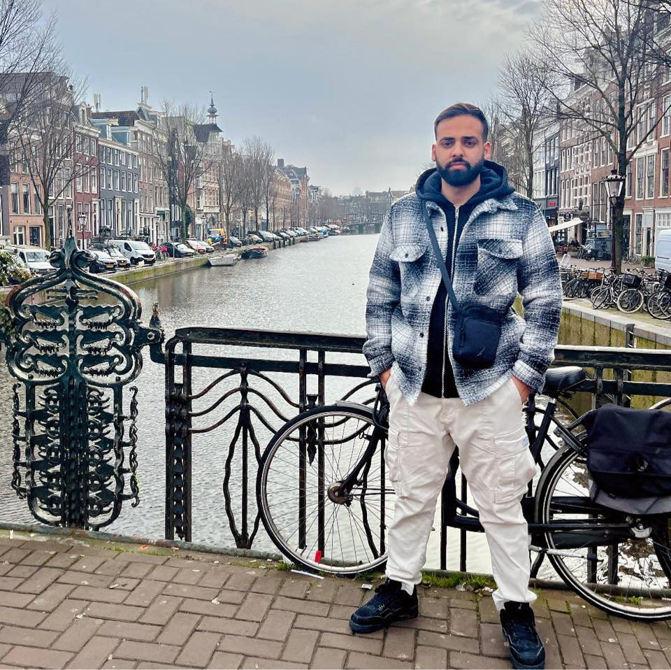

litle details about: NISAN AKNIN
Nisan, a native Israeli Jew, grew up in Bat Yam city. He recently completed 12 years of schooling, earning a high school diploma with a strong performance in film class. After graduation, Nisan spent two years and eight months fulfilling his mandatory military service. He thoroughly enjoyed his time there. Currently, Nisan works as a security guard for a government company. While employed full-time, he is actively pursuing a career in front-end development. He's a self-taught developer, demonstrating exceptional talent without the need for formal courses. Nisan is now actively seeking a job in front-end development, eager to leverage his skills and passion for the field.
Amazing Personality
1
Nisan's background is strong, but his skillset might be a better match for a slightly different type of front-end development role." Needs to demonstrate specific skills: "Nisan's self-taught approach is commendable. To be a strong candidate, he'll need to showcase his proficiency in specific tools and frameworks used in this type of position.
2
Nisan's self-taught skills and experience suggest strong potential for success in a front-end development role.
3
Nisan's self-motivation and exceptional talent make him well-suited for a front-end development position.